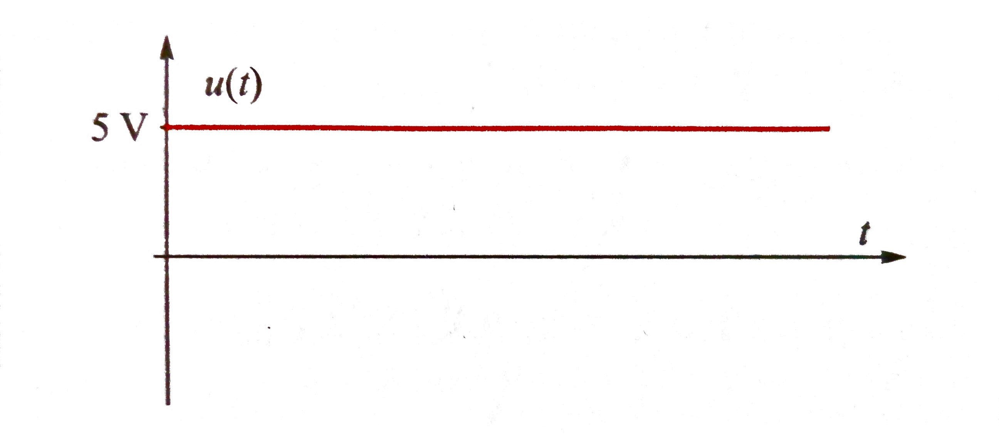
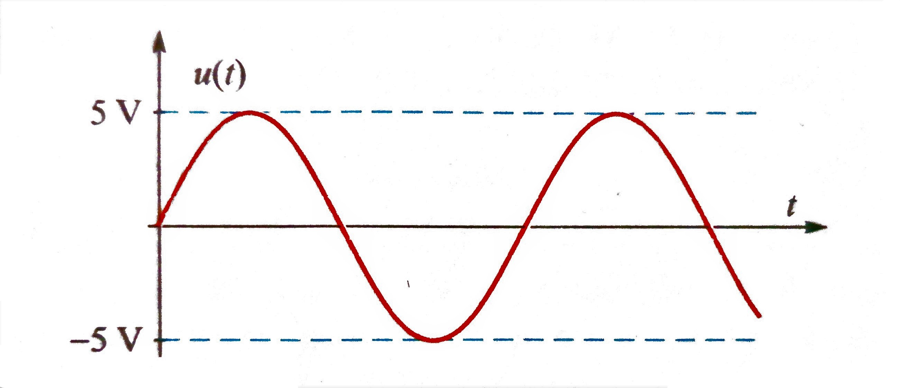

Osnove elektrotehnike
Što je to elektrotehnika
Elektrotehnika je primijenjena znanost čije je polje istraživanja teorija i praksa proizvodnje, prijenosa i uporabe električne energije.
Elektrotehnika kakvu je danas poznajemo ima duboke korijene u elektromagnetizmu koji je neodvojivi dio fizike.
U samim početcima elektrotehnika se dijelila na područje "jake" i "slabe" struje.
Brzim razvojem elektrotehnike unutar sveprisutnog znanstvenog i tehnološkog napretka,
u elektrotehnici danas razlikujemo nešto određenija područja rada i istraživanja gdje možemo spomenuti, na primjer, područja:
- Elektroenergetika
- Elektronika
- Elektroakustika
- Električne mreže i četveropoli
- Radiokomunikacije
- Telekomunikacije
Električni naboj, napon i struja
Električni naboj
Električna djelovanja objašnjavaju se postojanjem električnih naboja.
Razlikujemo dvije crste naboja kojima dijelimo na suprotan predznak te ih nazivamo pozitivni i negativni.
to je rezultat pojave da se približavanjem naboja njihova djelovanja na okolinu međusobno poništavaju.
Osnovni nosioci naboja su elementarne čestice proton i elektron (neutron nema naboj). Naboji protona i elektrona suprotnog su predznaka,
a istog iznosa. Taj se iznos naziva elementarni naboj i označava s e.
Proton je nabijen pozitivno Qp=+e, a elektron Qe=-e.
Elementarni električni naboj iznosi e ≈ 1.6 × 10-19 C .
Oznaka veličine naboja je Q.
Jedinica električnog naboja je kulon s oznakom C, tj.
$$ [Q] = C $$
1 C = 1 As (ampersekunda)
Električni napon
Pomakom naboja Q iz točke A u točku B promjenila mu se energija.
Naboj je isti, što znači da su mu potencijali točaka različiti.
Između točaka vlada razlika potencijala.
Razlika potencijala naziva se električni napon
Električni napon označava se slovom
U, a iskazuje se jedinicom
volt.
$$ U_{AB} = φ_B - φ_A \qquad [U] = V $$
Oznaka U
AB znači:
napon točke B prema točki A.
U
AB je pozitivan ako je točka B na većem potencijalu od točke A, a negativan kada je obratno.
-
Potencijal točke A je φA= 5 V, a potencijal točke B je φB= 30 V.
Koliki je napon UAB, a koliki napon UBA ?
$$ U_{AB} = φ_A - φ_B = 5 V - 30 V = -25 V$$
$$ U_{BA} = - U_{AB} = 25 V$$
Naponi UAB i napona UBA suprotnih su predznaka.
Oblici električnog napona
Prema obliku vremenske promjene napona razlikujemo više vrsta napona, kao npr. stalni (ili kontinuirani), pravokutni, pilasti, sinusoidni i sl.
Dijelimo ih u osnovi na istosmjerne i izmjenične.
Istosmjerni napon stalnog je potencijala, a kod izmjeničnog polaritet se naizmjenično mijenja.
Od posebne važnosti u praksi su: istosmjerni napon stalnog iznosa (prikazan na slici),
te izmjenični napon čija vremenska promjena ima oblik sinusne funkcije (sinusoide) prikazan na slici.


Električna struja
Među raznoimenim nabojima razdvojenim na priključnicama izvora vlada privlačna sila.
Ako se priključnice izvana vidljivo spoje, između naboja se uspostavi vodljivi put kroz koji nastaje gibanje naboja koje nazivamo električna struja.
Električna struja je usmjereno gibanje naboja.
Slobodno gibanje elektrona u bakru nije struja, jer se slobodni elektroni tamo gibaju nasumice u raznim smjerovima.
Spoji li se međutim komad bakra između priključnica izvora, zbog napona (razlike potencijala)
između njegovih krajeva u bakru se javlja el. sila koja tjera (usmjerava) elektrone od mjesta
gdje ima višak elektrona (niži potencijal) prema mjestu gdje je manjak elektrona (viši potencijal).
Tako nastaje usmjereno gibanje elektrona koje nazivamo električna struja.
Uzrok struje je napon (elektromotorna sila).
To znači: postoji li između dviju točaka napon (razlika potencijala) tada će,
kad se one vidljivo spoje, među njima doći do usmjerenog gibanja naboja, tj.
među njima će poteći električna struja.
Jakost struje
Glavna značajka električne struje je njena jakost.
Jakost struje je veća što više naboja prođe poprečnim presjekom vodiča u 1 sekundi.
Oznaka jakosti struje je I, a jedinica je amper (A).
$$ I={Q \over t} \qquad [I]={As \over s}= A $$
Električna snaga
Snaga općenito označava sposobnost izvršenja
nekog rada u određenom vremenu. Snaga se izražava kao
promjena energije (rad) W u jedinici vremena
i označava slovom P.
$$ P ={ W \over t } $$
Uvrstimo li tu izraz za el. energiju (rad) \( W = U \cdot I \cdot t \)
dobivamo \( P = {W \over t} = {{U \cdot I \cdot t} \over t} = U \cdot I \)
tj. snaga na nekom elementu el. kruga jednaka
je umnošku njegova napona i jakosti struje.
Jedinica za snagu je
voltamper (VA) ili
vat (
W)
$$ P = U \cdot I \qquad [P]= VA = W $$
Snaga na otporu protjecanom strujom može se izraziti
pomoću veličine otpora i struje, ili pomoću veličine otpora
i napona na otporu.
Prema Ohmovom zakonu \( I={U / R} \) što za snagu daje:
$$ {P = U \cdot I} \quad {I = {U \over R}} \quad {P = {U \cdot {U \over R}}} \qquad {P = {U^2 \over R}} $$
Uz stalni otpor snaga raste s kvadratom napona,
a uz stalni napon obrnuto je razmjerna otporu.
Zamjena pak U s \(I \cdot R \) u jednadžbi za snagu daje:
$$ {P = U \cdot I} \quad {U = I \cdot R} \quad {P = I \cdot R \cdot I} \qquad {P = I^2 \cdot R} $$
Uz stalni otpor snaga je razmjerna kvadratu struje,
a uz stalnu struju razmjerba je otporu.